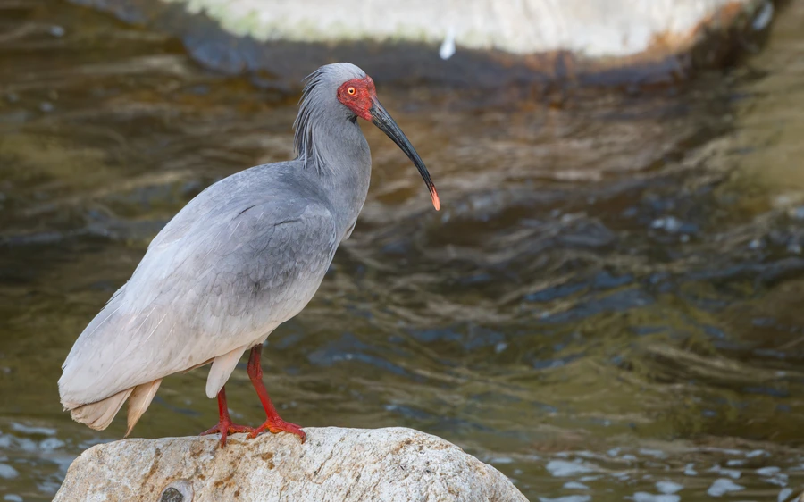

鸟类 · 动物界
朱鹮 Nipponia nippon

曾一度被认为野生灭绝的东方神鸟，羽色白中透粉、脸颈朱红，经中国持续保育从 7 只恢复到万余只。
- 分类
- 门脊索动物门纲鸟纲目鹈形目科鹮科属朱鹮属
- 栖息环境
- 海拔 800–1600 米的山地农田、溪流、水塘与疏林交错带，营巢于高大乔木
- 地理分布
- 中国陕西洋县为核心分布区，河南、浙江等地有重引入种群，日本、韩国亦有放归个体
- 保护级别
- IUCN 濒危（EN）；中国国家一级保护动物
物种志
朱鹮体长约 55–80 cm，体重 1.4–2 kg，喙细长而向下弯曲，脸部和颈部裸露的皮肤呈朱红色。非繁殖期羽毛洁白，透出淡淡的粉红色；繁殖期颈、背和翅上会渗出灰黑色分泌物，把羽毛染深。头后有一撮柳叶状羽冠，飞行时颈部前伸、双腿后展，姿态轻巧。
1981 年，中国科学家在陕西洋县姚家沟重新发现仅存 7 只的野生朱鹮，当时它已被认为在野外绝迹多年。此后中国建立保护区、开展人工繁殖与野化放归，种群逐步扩散到河南、浙江等地，并输出到日本、韩国。朱鹮栖息于海拔 800–1600 米的山地农林交错带，在溪流、水田和浅塘中觅食，在较高的树上营巢。每年 3–6 月产卵 2–4 枚，孵化约 28 天。目前全球种群已恢复至万余只，但仍属濒危物种。
形态与习性
- 食性泥鳅、小鱼、蛙类、甲壳类和水生昆虫
- 体长约 55–80 cm
- 体重1.4–2 kg
- 寿命野外约 20 年，圈养可超过 30 年
- 繁殖3–6 月产卵 2–4 枚，孵化约 28 天
- 羽色非繁殖期白色透粉，繁殖期用分泌物染成灰黑
- 种群全球约 1 万余只，中国占绝大多数
趣味知识
- 1981 年在陕西洋县发现的 7 只野生朱鹮，是全球朱鹮种群的最后火种。
- 繁殖期朱鹮会把颈部腺体分泌的灰黑色物质涂抹到羽毛上，被称为“涂色”。
- 朱鹮曾分布在日本、朝鲜半岛和中国东部，因水田消失与猎捕而急剧衰退。
- 日本将朱鹮视为圣鸟，其学名意为“日本”，但今天最大的种群在中国。